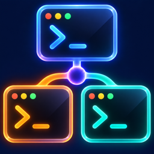

AgentRelay — нативное рабочее пространство для macOS. Codex, Claude Code, GitHub Copilot CLI, Pi, Hermes и ваши CLI работают рядом на общем холсте, а редактор, Git-клиент, браузер и заметки — в том же окне. Закройте приложение — агенты продолжат работу.
Демо на вымышленном проекте. Статус в заголовке окна показывает, кто из агентов работает, а кто закончил; щелчок по пути в выводе открывает файл в редакторе на нужной строке. Справа — экспериментальный Supervisor.
Готовы из коробкиCodexClaude CodeGitHub Copilot CLIPiHermesи ваш CLI
Всё вокруг агентов — в одном окне.
AgentRelay запускает настоящие CLI, а не заменяет их своим чатом, и собирает вокруг них то, чего не хватает во вкладках терминала.
Каждое окно — настоящий терминал с true color и вашим шрифтом. А вокруг — то, чего не хватает, когда агенты живут во вкладках Terminal или iTerm.
#1 Codex acme-webWorking
#2 Claude Code acme-webDone
#3 Hermes docsIdle
Видно, кто работает, а кто закончил
AgentRelay следит за экраном каждого агента и подписывает окно: Working, пока агент думает или гоняет команды, Idle или Done, когда он ждёт вас. Это наблюдение за активностью, а не проверка результата.
#1 Codex
6m 12s
#2 Claude
7m 05s
#3 Hermes
1m 30s
−15m−10m−5mсейчас
Таймлайн активности
Цветные полосы показывают, когда каждый агент работал: окна от 5 минут до 24 часов, суммарное время справа. История хранится локально и переживает перезапуск.
⎿ Updated src/nav.tsx:42+6 −1
42<navclassName="nav--sticky">
Пути в выводе кликабельны
Путь, ссылка file:// или OSC 8 открывается во встроенном редакторе на нужной строке и колонке — рядом с агентом, на том же холсте.
#1 Codex#2 Claude Code#3 Pi
› Прогони все тесты и расскажи о падениях
Отправлено 2 агентам
Один запрос — нескольким агентам
⌘-щелчок по кнопкам окон выбирает адресатов, Message отправляет всем один текст. Многострочное поле, история до 100 запросов, повтор по ↑ и ↓.
Screen 12.04.png
› глянь '/Users/me/Screen 12.04.png'
Картинки — перетаскиванием
Скриншот или несколько изображений из Finder превращаются в пути в кавычках. Пробелы в именах ничего не ломают.
❯ git status
On branch sticky-nav
nothing to commit, working tree clean
~/dev/acme-web✓ Скопировано
Строка пути и экспорт чата
Щелчок копирует путь рабочей папки, двойной — открывает рядом новый терминал. У Codex, Claude Code и Copilot CLI можно скопировать весь чат из их журналов или открыть его в редакторе.
ИсторияtmuxМышь CLI
Прокрутка и выделение
Колесо листает историю терминала, историю tmux или уходит самому CLI: режим задаётся для CLI и для отдельного окна. Выделение тянется за край окна и копируется точно.
AgentRelayGraphiteMidnightForestEmber
Ваш шрифт, ваши цвета
Встроенный Iosevka или любой моноширинный шрифт; ⌘+ и ⌘− меняют размер везде. Пять палитр, девять настраиваемых цветов, светлая и тёмная темы, прозрачность и размытие.
Закройте приложение. Агенты продолжат работу.
Каждый агент живёт в своей сессии tmux, а не внутри окна. AgentRelay лишь подключается к ней, поэтому после перезапуска карточки встают на свои места и снова показывают те же процессы.
AgentRelay
окно открыто⌘Qоткрыто снова
codex · tmux
claude · tmux
Выход: терминалы отключаются, процессы остаютсяЗапуск: те же карточки подключаются к тем же процессам
tmux уже внутри. Ставить его отдельно не нужно: AgentRelay несёт собственную сборку для Apple Silicon.
Честно о границах. Перезагрузка Mac завершает процессы агентов — карточка предложит запустить CLI заново. Обычные терминалы после перезапуска открывают свежий login shell в той же папке.
Порядок на холсте — одним щелчком.
Окна примагничиваются к краям холста и друг к другу, а общий край тянется сразу за обоими соседями. Раскладок на панели пять; повторное нажатие переворачивает порядок. А группы окон можно держать в именованных workspaces.
#1 Codex · acme-web
#2 Claude Code · acme-web
#3 Hermes · docs
#4 Copilot · acme-api
Редактор и Git — рядом с агентом.
Проверяйте работу агента, не выходя из окна: файл открывается на том же холсте, а Git-панель показывает историю и diff проекта активного окна.
Git acme-web develop · ↑1
@@ src/lib/limiter.ts @@
- if (count > limit) return false;
+ if (count >= limit) return false;
+ bucket.refill(now);
1 staged2 unstaged1 untracked
nav⌘P
nav.tsxsrc/components
nav.test.tsxsrc/components
navigation.mddocs
Редактор и Quick Open
Подсветка синтаксиса, ⌘S, поиск в файле, маркеры незакоммиченных строк. ⌘P ищет файл по имени в проекте. С несохранённым и с изменённым снаружи файлом приложение не поступит молча.
История, граф и blame
Граф коммитов с ветками и тегами, фильтры по автору, тексту, пути и датам, история файла, blame, diff с контекстом 3, 10 или целиком.
Staging до строки
Файл, hunk или отдельные строки — в индекс и обратно. Коммит и amend; Git hooks выполняются, ошибки видны.
Ветки, remote, stash
Ветки и теги, fetch, pull (только fast-forward), push, stash, merge, rebase, cherry-pick, revert и reset — с подтверждением рискованных шагов. Force push не используется.
Конфликты и worktrees
Инспектор конфликтов показывает базу и обе стороны; разрешайте в редакторе или выбором стороны. Worktree создаётся из панели, и в нём сразу можно запустить сессию агента.
Review вместе с агентом
Зафиксируйте baseline перед задачей и потом посмотрите, что изменилось. Панель готовит запрос на ревью, объяснение коммита или помощь с конфликтом: он попадает в composer, а отправляете его вы.
Pull request’ы, комментарии GitHub и CI в приложение не встроены. Это локальный Git-клиент и лёгкий редактор, а не IDE: ни автодополнения, ни отладчика нет.
Браузер, файлы, заметки и тикеты — рядом.
Боковые панели не плодят окон, а их состояние хранится вместе с workspace.
Браузер ⇧⌘B
Вкладки, адресная строка и сохранённые входы справа от холста. Чтобы агент мог управлять вкладками, нужно отдельное разрешение; во время его работы видны баннер и кнопка Stop.
Без расширений, блокировки рекламы и менеджера паролей.
Файлы ⇧⌘E
Дерево и быстрый список папки проекта: фильтры по типам, Git-бейджи, превью и Quick Look. Строки перетаскиваются в терминал.
Только просмотр: файлы не создаются, не переименовываются и не удаляются.
Заметки ⌥⌘N
Мини-блокнот: глобальные, workspace- и проектные заметки в обычных текстовых файлах.
Простой текст — без форматирования и поиска.
Тикеты
База Notion или Jira Cloud: спринт и бэклог рядом с кодом, смена статуса прямо из панели.
Подключение своим токеном Notion или входом в Jira.
Экспериментальная функция
Supervisor: план, исполнители, независимое ревью.
Опишите цель в чате Supervisor — он предложит план из этапов. Вы одобряете запуск, исполнители работают в отдельных worktree, а ревьюер независимо проверяет точный коммит. Включён по умолчанию, отключается в Settings → Supervisor.
Если восстановление истории не удалось, Supervisor сохраняет черновик и предлагает повторить загрузку. Stop reply приостанавливает события задач до Resume events; ошибки планирования показаны у соответствующего плана.
Цель
Опишите задачу в чате или командой /plan.
План
Этапы, критерии, роли, CLI и зависимости видны до запуска.
Одобрение
Ничего не стартует без вашего подтверждения, а одобренный план замораживается.
Исполнение
Исполнитель — обычное окно на холсте, как правило в отдельном worktree.
Ревью и Verified
Отдельный ревьюер проверяет именно этот коммит. До трёх циклов исправлений, затем зовёт вас.
Plan v1Rate limiting for the search API3 tasks · 2 in parallel
Review commit 3c9a5e0Reviewer · Claude Codeточный коммит, отдельная копия
Checking
3
Document the 429 responseWriter · Hermesждёт этап 1
Waiting
DetailsReview & start…нужно ваше подтверждение
2 items are waiting for you
!
Plan v1 · Checkout flow cleanupждёт вашего подтверждения перед запуском
Review & start…
!
Migrate session storeостановлена после трёх циклов исправлений — решить вам
Stopped
16 фиксированных ролей
Исполнители (Executor, Architect, Designer, Investigator, Writer и другие) и проверяющие (Reviewer, Design reviewer, Security reviewer, Acceptance tester). Для роли можно задать свой CLI, модель и effort.
Verified — это доказательства
Отчёт агента сам по себе ничего не доказывает: приложение сверяет коммит с критериями, само запускает проверочную команду и требует независимое ревью.
Список «Waiting for you»
Всё, что требует вас, собрано в одном списке и счётчике; если AgentRelay не на переднем плане, придёт уведомление.
Передача pull request
Когда задача Verified и в отчёте есть ссылка на draft PR, приложение может перевести его в ready for review через gh. Merge оно не делает.
Управляемые бэкендыэкспериментально
По выбору исполнители и ревьюеры работают не в терминале, а через протокол самого CLI: Codex App Server, Claude stream-json, Copilot SDK RPC, Pi RPC, Hermes ACP.
Честно о границах. Supervisor экспериментальный: качество разбиения на этапы зависит от модели, worktree — не песочница, а права исполнителя определяет его CLI. Автоматического merge, планов на несколько репозиториев и запуска по расписанию нет.
Локальная автоматизация для внешних AI-клиентов.
Выключена по умолчанию. Включите Allow MCP access в Settings → Automation, выберите один проект — и доверенный клиент сможет создавать ограниченное число агентов и вести с ними диалог.
list_sessionsметаданные сессий выбранного проекта
create_sessionзапускает выбранный CLI в разрешённой папке; окно видно вам
send_inputтекст и Enter в сессию, созданную в этой авторизации
read_outputхвост терминала, до 16 000 символов
Управление браузерной панелью открывается отдельным разрешением (Allow browser control); пока агент действует, панель показывает баннер и кнопку Stop.
Только локально. Конечная точка слушает 127.0.0.1 и защищена свежим токеном. Мост agentrelay-mcp уже в комплекте — Python и Node не нужны.
Лимиты. До 4 созданных сессий и 256 принятых вводов на одну авторизацию; повтор с тем же request_id не дублируется.
Видимо и отзываемо. Созданные агенты появляются на вашем холсте, а доступ можно отозвать в любой момент.
Чего нет. Остановка и закрытие окон, Git и запись в редакторе внешнему клиенту не открыты; уже запущенные окна ему видны только как метаданные.
Не песочница. Лимиты MCP не ограничивают права самих CLI на файлы и сеть.
Мелочи, которые экономят время.
Когда агентов пять, а веток три, важно быстро находить нужное окно и не терять контекст.
Панель всех окон
У каждой сессии, терминала и редактора своя кнопка #номер клиент проект ветка. Щелчок выводит окно вперёд и разворачивает свёрнутое.
Любой CLI
Имя, исполняемый файл, аргументы и переменные окружения; встроенные CLI тоже можно переопределить. AgentRelay ищет CLI в Homebrew, npm, Bun, Cargo, Volta и asdf, а если не нашёл — предложит указать путь.
Сменить CLI или продублировать
Окно можно перезапустить с другим агентом или в другой папке, не теряя места на холсте. Дубликат открывает новую сессию того же CLI в том же проекте.
Именованные workspaces
Группы окон со своей папкой проекта: переключайтесь, не останавливая сессии, переносите окна между группами или открывайте workspace в отдельном окне macOS.
Режим без рамок
⇧⌘F убирает рамки окон сессий и редакторов — остаётся чистый холст с небольшими просветами.
Внешний вид и доступность
Светлая и тёмная темы, метки для VoiceOver, поддержка Reduce Motion, подсказки у кнопок.
Всё с клавиатуры.
Основные сочетания. Полный список — в меню приложения.
Новая сессия
⌘N
Поиск файла (Quick Open)
⌘P
Следующее окно
⌃Tab
Окно по номеру
⌘1–9
Раскладки холста
⌃⌥1–5
Git-панель
⇧⌘G
Браузер
⇧⌘B
Файлы
⇧⌘E
Таймлайн
⇧⌘T
Заметки
⌥⌘N
Режим без рамок
⇧⌘F
Настройки
⌘,

Три шага до первого агента.
Бесплатное нативное приложение для macOS. Подписано и нотаризовано Apple.